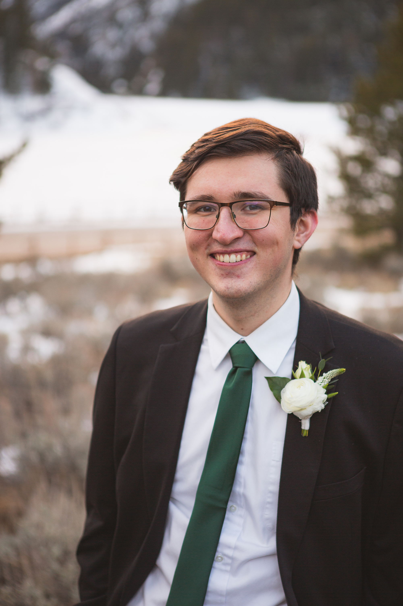

Biography
The music of Simon Cheek (b. 2001, BMI) explores human psychology and our connection with the natural environment through a variety of music ranging from solo to orchestral works. Currently a student of music composition and computer science at Brigham Young University (Provo, Utah), Simon's music has been performed by the BYU Philharmonic Orchestra, Group for New Music, and Honors Brass Quintet.
His music has also been performed in places such as the International Clarinet Association's (ICA) Clarinetfest, the North American Saxophone Alliance, the June in Buffalo New Music Festival, the Brevard Music Center, and more! While at BYU, Simon's music has won Grand Prize in the Vera Mayhew Music Composition Contest (open to all BYU students) in 2020 and 2022.